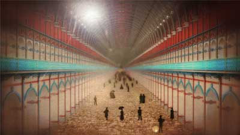
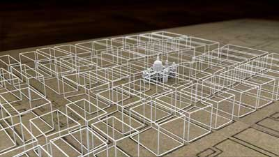

Dreaming the Impossible: Unbuilt Britain
Presented by Dr Olivia Horsfall Turner
Using her investigative skills to uncover long forgotten and abandoned plans, Architectural Investigator Dr Olivia Horsfall Turner explores the fascinating and dramatic stories behind some of the grandest designs that were never built.
In this surprising series, Olivia will make the imagined buildings of the past relevant to our lives in the present, awakening an understanding of how the character of the built environment we live in today is determined as much by the buildings that were never constructed, as by the buildings that actually exist.
First broadcast on BBC4 in August 2014.
Using the latest 3D graphics technology, the programmes bring to life "Unbuilt Britain."
- 
- 